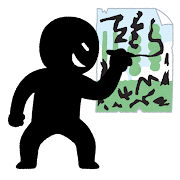

康德義務論的核心理念
與職場實踐剖析
當剛出社會的新人面對「主管施壓、同儕妥協與利益誘惑」，康德定言令式如何指引我們堅守不可退讓的道德底線？
按方向鍵 [→] 或 [空白鍵] 開始瀏覽
動機論與「出於義務」的純粹意志
道德價值不在於外在後果，而在於行為動機是否出於對道德律的純粹敬重。
⚖️ 規範倫理學 vs 結果論
- 拒絕後果論的功利算計：結果論（Consequentialism）主張「追求最大多數人的最大利益」；康德則認為手段本質的正當性先於後果好壞。
- 出於義務（From Duty）：
- 「合乎義務但出於自利」（例如：商人為了商譽而不欺騙）$\rightarrow$ 無真實道德價值。
- 「純粹出於對道德法則的敬重」（即使面臨孤立與受罰依然誠實）$\rightarrow$ 具備純粹道德價值。
🎓 新人職場啟示
不要以「這樣做公司可以多賺錢」或「這樣做我才能保住考績」作為道德辯護。純粹的善意，是絕不因外部利誘而動搖原則。
最高道德命令：定言令式（Categorical Imperative）
區分「假言」與「定言」，確立不可妥協的普遍法則。
假言令式（Hypothetical Imperative）
「如果你想要 X，你就必須做 Y。」
- 本質是工具理性與自利交換。
- 「如果我想通過試用期，我就必須幫主管掩飾漏洞。」
- 一旦目的改變或不被發現，行為規範即告失效。
定言令式（Categorical Imperative）
「無論如何，你都必須做 Y！」
- 本質是無條件、絕對且普遍約束的理性律令。
- 「不可偽造數據，因為偽造本身違背了人類理性的普遍法則。」
- 適用於所有理性存在者，毫無特權與例外。
普遍法則公式
行動準則能否同時意願成為全世界通行的普遍自然律？
目的自身公式
對待任何人（包括自己），永遠當作目的，絕不僅僅當作工具！
公式一：普遍法則公式（Universal Law）
「只依據那條你同時能意願它成為普遍法則的格準去行動。」
🔍 康德的邏輯矛盾檢驗四步驟
- 提煉個人格準：「當對我有利時，我可以許下虛假承諾或隱匿瑕疵。」
- 普遍化設想：「想像全世界所有人只要對自己有利，都在許下假承諾。」
- 邏輯自毀檢驗：在所有人都在說謊的世界裡，「承諾」這一概念將徹底崩潰且失去意義！沒有人會再相信任何承諾。
- 結論判定：該格準在邏輯上自我矛盾，因此說謊或做假在理性上被絕對禁止。

破窗與潛規則的自相矛盾
當同事說「大家都拿、沒人發現」時，普遍化檢驗證明：若所有員工都私帶公物，公司治理與聘僱信任即刻瓦解。公式二：目的自身公式（Humanity as an End）
「對待人身中的人性，永遠同時當作目的，絕不僅僅當作工具（means）。」
💎 什麼是「將人當作目的」？
- 尊重理性自主權（Autonomy）：每個人都是獨立思考、有自決尊嚴的理性主體。
- 反對資訊剝奪與欺瞞：若刻意隱瞞真相、提供虛假數據，等同剝奪了對方的理性選擇能力，將對方矮化為達成己方目的的道具。
- 知情同意（Informed Consent）的哲學基石：不論是病患、學生還是消費者，都有權獲得完整真實資訊。
🚫 職場中的「工具化」陷阱
- 對病患：以「保護情緒」為由隱瞞末期病情，把病患當作免生麻煩的被支配客體。
- 對學生：為了換取學院贊助或 Tenure，將學生成績作為討好金主的利益籌碼。
- 對公眾：為了公司股票融資而隱匿軟體漏洞，將數百萬用戶財產置於危險之中充當肉盾。
職場微腐敗：同事私帶公物回家「大家都拿」
對應 Wiki 案例 2：[[case-02-office-supplies-peer-pressure]]
📍 兩難情境還原
老鳥阿凱私自把昂貴專用紙與雷射筆塞進背包，並塞一支給剛入職的阿豪：「這算員工小福利，大家都拿，只要不說就沒人知道，拿去用！」
🧠 康德義務論的精準診斷
- 普遍化公式檢驗：偷竊行為無法普遍化。無論價值是一支原子筆還是一百萬資產，不告而取在概念上必然自毀聘僱契約。
- 道德誘惑（Moral Temptation）：此情境屬於對錯分明的「道德誘惑」，而非真正的道德兩難。阿豪受同儕壓力動搖屬於《行為倫理學》中的道德軟弱。
- 行動指引：堅決拒收，守住底線；絕不在任何虛假的報銷單與盤點表上共同背書。

「大家都拿」是相對主義的偽辯護
康德絕對禁止為自己開特例。微小的貪婪是職業誠信崩壞的第一張骨牌。醫療現場：病患知情權 vs. 家屬隱瞞要求
對應 Wiki 案例 1：[[case-01-hospital-privacy-disclosure]]
受託責任的核心是誰？
專業護理人員的最高受託對象是「病患本人的自主生命」，而非家屬的代位支配。📍 兩難情境還原
清醒的胃癌晚期伯伯懇切詢問檢查結果，希望安排餘生交代後事；家屬以「避免父親崩潰」為由威脅醫護團隊絕不可說實話，否則提告投訴。
🧠 康德義務論的精準診斷
- 踐踏目的自身公式：家屬的家長式作風（Paternalism）把病患當成了「脆弱的受支配對象」，實質剝奪了他作為理性存有安排生命的知情權利。
- 說謊在道德上被絕對禁止：護理師小雯若協助說謊，等同成為系統性欺瞞的共犯。
- 行動指引：不對病患說謊，但避免草率衝突；主動要求召開正式病情說明會，落實知情同意權。
象牙塔生存戰：資深教授違規評分與 Tenure 威脅
對應 Wiki 案例 3：[[case-03-academic-grading-vs-tenure]]
📍 兩難情境還原
年輕助理教授林博士發現講座教授 A 放水給捐款金主二代 85 分高分，向 A 教授反應卻被暗示威脅：「不顧全大局，明年的 Tenure 評審小心過不了。」
🧠 康德義務論的精準診斷
- 不可將人當作換取職位的籌碼：若為了保住個人教職而配合放水，是把辛勤苦讀的其他學生當作工具，也把神聖的學位文憑商品化。
- 定言令式的剛性要求：捍衛學術誠信是教師的絕對義務，不得以「先妥協拿到教職、以後再當好人」為藉口。
- 行動指引：堅持自己負責區塊依規實打成績，絕不主動簽核虛假成績冊；留存完整客觀卷證自保。
學術正義不容妥協
如果你在強權前屈服第一次，當你拿到 Tenure 時，你早已成為當初自己痛恨的大老。科技交付壓力：新人工程師發現資安漏洞 vs 主管下令隱匿
對應 Wiki 案例 5：[[case-05-tech-safety-boss-pressure]]
代碼是數位時代的無形大橋
工程師敲下的每一行代碼都攸關無數家庭的財產與信任。專業簽核權絕不可賤賣。📍 兩難情境還原
志偉在上線前三天發現轉帳邏輯漏洞，副總拍桌怒斥：「延期發布融資會破局，大家沒薪水！立刻刪除日誌簽署部署單，別忘了你還在試用期！」
🧠 康德義務論的精準診斷
- 公眾不能被當作融資肉盾：將數百萬用戶存款暴露在已知致命漏洞下，是極端將人工具化的行徑。
- 普遍化檢驗：若全體工程師都因試用期壓力隱瞞漏洞，科技社會的基礎信用將徹底瓦解。因此簽名違規在理性上是自我毀滅。
- 抗拒米爾格倫盲從：展現道德能動者的勇氣，拒絕違背專業自主性簽核。
康德義務論的現實挑戰與局限反思
在殘酷多變的現代職場中，我們該如何看待康德理論的剛性要求？
⚠️ 過於嚴苛與缺乏彈性
康德著名的「門口兇手（Murderer at the door）」思想實驗主張：即使兇手在門口追殺朋友，你依然不能說謊。在現實極端情境下，過度死板可能導致災難性後果。
⚡ 義務衝突缺乏排序
當「保密義務」與「拯救生命的義務」同時碰撞時，康德未提供精確裁決機制。這正是促成後續 W. D. Ross 顯見義務論（不傷害原則優先） 誕生的關鍵。
🛡️ 新人的制度性弱勢
要求剛出社會、毫無資源的弱勢菜鳥「以死明志」硬撞體制是不人道的。現代專業倫理強調「在堅守原則的同時，懂得運用合規程序與留存卷證自我防護」。
從道德底線，走向道德勇氣
1. 普遍化審視
如果你做的事成為全世界的潛規則，這個世界能維持運轉嗎？
2. 人是目的
永遠不要把病患、學生、客戶或同事當作自己換取考績與利益的工具。
3. 道德能動者
法律只是最低底線。在白袍、西裝與鍵盤背後，用專業良知守護公共福祉。
做正確的事，只因為它是正確的。—— 伊曼努爾·康德